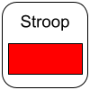

<!DOCTYPE html>
<html>
  <head>
    <meta charset="UTF-8">
    <meta name="description" content="jsPsych Stroop Word">
    <meta name="keywords" content="HTML, CSS, JavaScript">
    <meta name="author" content="Jason Steffener, NCMLab">
    <meta name="viewport" content="width=device-width, initial-scale=1.0">
    <title>Stroop Word</title>
    <script src="../jspsych/dist/jspsych.js"></script>
    <script src="../jspsych/dist/plugin-html-keyboard-response.js"></script>
    <script src="../jspsych/dist/plugin-html-button-response.js"></script>
    
    <script src="../config/Button_config.js"></script>
  </head>
  <body>
    <div id="jspsych-target"  style="overflow:hidden; height:100%" class='center'></div>
</body>
  <script>
  const delay = ms => new Promise(res => setTimeout(res, ms));

  var jsPsych = initJsPsych({
    display_element: 'jspsych-target',
    on_finish: function() {
      // set the updated list of NON-completed task to the JATOS session data      
      jatos.setStudySessionData(jsPsych.TEMP)
      // Check which button was pressed and advance to that task
      switch(jsPsych.responseButton) {
        case "Word":
          // Word
          // This sets session data which can be accessed later by other tasks
          // find current case in the session data list and remove it
          // find and remove entry in the list
          //jatos.startComponent(11);
          console.log('Word')
        case 'Color':
          // Color
          //jatos.startComponent(12);
          console.log('Color')
        case 'ColorWord':
          // Word/Color
          //jatos.startComponent(13);
          console.log('WordColor')
        default:
          console.log('DEFAULT') 
      }
      
    }
  });

  timeline = [];
  
 

var trial1 = {
  // This displays a series of buttons on the screen for each component of this session. 
  // The buttons are dynamically created based on what has been completed already
    type: jsPsychHtmlButtonResponse,
    stimulus: '<p>Running</p>',
    prompt: "<p>Stroop</p>", 
    // This is just a place holder to stop a jsPsych error
    choices: '',
    on_start: function(trial) {
      // set the buttons at the start of this trial
      var TEMP = jsPsych.TEMP;
      trial.choices = ['','',''];
      //str = ''
    },
    on_finish: function() {
      // What button number was pressed?
      var data = jsPsych.data.get().last(1);
      // What is the text label for this button?
      console.log(data.trials[0].response)
      var responseButton = jsPsych.TEMP[data.trials[0].response]
      // Put the button pressed label inot a local variable
      jsPsych.responseButton = responseButton
      // Find the index in the available button list that was pressed
      var ind = jsPsych.TEMP.indexOf(responseButton)
      // Remove the pressed button from the button list in the local variable
      jsPsych.TEMP.splice(ind, 1); 
    }
  };
var trial2 = {
  // This displays a series of buttons on the screen for each component of this session. 
// The buttons are dynamically created based on what has been completed already
    type: jsPsychHtmlButtonResponse,
    stimulus: '<p>Running</p>',
    prompt: "<p>Stroop</p>", 
    // This is just a place holder to stop a jsPsych error
    choices: ['Next']
  }
timeline.push(trial1)
//timeline.push(trial2)
  //jatos.onLoad(() => {jsPsych.run(timeline);});

   jsPsych = initJsPsych({
    display_element: 'jspsych-target',
    on_interaction_data_update: function(data) {
        console.log(JSON.stringify(data))
    },
    on_finish: function() {
      //jsPsych.data.get().localSave('csv','ICAR_MatrixReasoningTask.csv');
    }
  });
  jsPsych.run(timeline)
  </script>
</html>